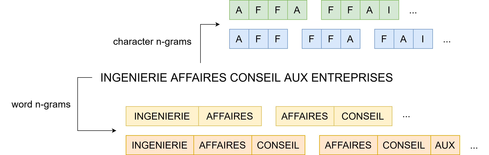

BCEAO - Jour 3
27 septembre 2023
Plusieurs changements majeurs:
Constat: Sicore n’est plus l’outil adapté ➨ seulement 30% de codification automatique.
Conséquence: moment idéal pour proposer une nouvelle méthodologie de codification automatique de l’APE.
\(\approx\) 10 million de liasses d’entreprises issues de Sirene 3 couvrant la période 2014-2022.
Données labellisées par Sicore ou par un gestionnaire.
Une observation consiste en :
| Niveau | Code | Libellé | Taille |
|---|---|---|---|
| Section | H | Transports et entreposage | 21 |
| Division | 52 | Entreposage et services auxiliaires des transports | 88 |
| Groupe | 522 | Services auxiliaires des transports | 272 |
| Classe | 5224 | Manutention | 615 |
| Sous-classe | 5224A | Manutention portuaire | 732 |

C++).| Text | NAT | TYP | EVT | SUR |
|---|---|---|---|---|
| Cours de musique | NaN | X | 01P | NaN |
“Cours de musique NAT_NaN TYP_X EVT_01P SUR_NaN”
| Transformation | Text description |
|---|---|
| Input | 3 D: La Deratisation - La Desinsectisation - La Desinfection |
| Lower-case conversion | 3 d: la deratisation - la desinsectisation - la desinfection |
| Punctuations removal | 3 d la deratisation la desinsectisation la desinfection |
| Transformation | Libellé |
|---|---|
| Input | 3 D: La Deratisation - La Desinsectisation - La Desinfection |
| … | … |
| Numbers removal | d la deratisation la desinsectisation la desinfection |
| One-letter word removal | la deratisation la desinsectisation la desinfection |
| Stopwords removal | deratisation desinsectisation desinfection |
| Transformation | Libellé |
|---|---|
| Input | 3 D: La Deratisation - La Desinsectisation - La Desinfection |
| … | … |
| NaN removal | deratisation desinsectisation desinfection |
| Stemming | deratis desinsectis desinfect |
Figure 1: Taux de précision pour chaque niveau de la nomenclature du code APE
Figure 2: Top-\(k\) accuracy pour chaque jeu de données.
Figure 3: Distribution de l’indice de confiance en fonction du résultat de la prédiction.
Figure 4: Précision en fonction du taux de reprise manuelle effectuée.